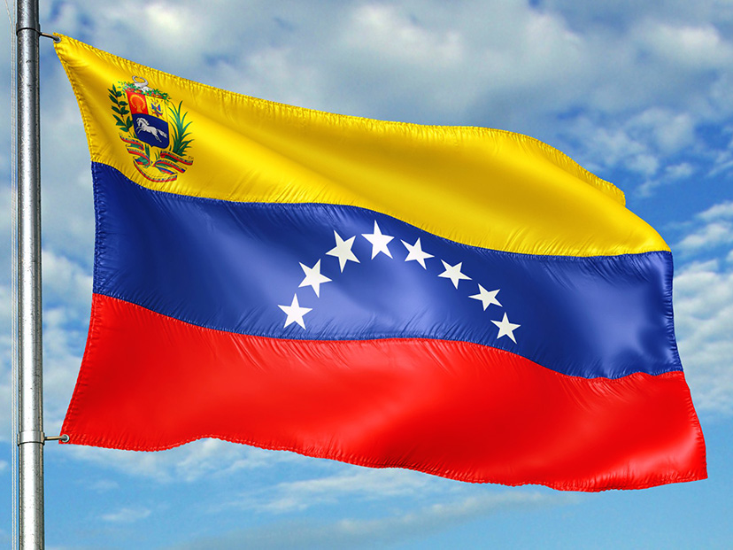

El Gobierno oficializó un nuevo aumento en servicios públicos
y consolida su política económica
Las subas del 4% final en las boletas comenzarán a regir con el consumo desde este domingo
El Gobierno oficializó hoy en el Boletín Oficial los aumentos en los servicios de gas y electricidad a partir del consumo del 1° de septiembre. El objetivo es evitar que la devaluación mensual y la inflación erosionen las fuertes actualizaciones tarifarias realizadas de la primera parte del año, que permitieron bajar el gasto en subsidios.
Apagón en Venezuela: casi todo el país amaneció sin luz y el
gobierno de Maduro denuncia un “sabotaje eléctrico”

Los 24 estados registraron pérdida total o parcial del servicio, que afectó también a internet, en medio de la grave crisis política tras las elecciones; de a poco comenzó a reactivarse
CARACAS.- La capital de Venezuela y la mayoría de los estados del país amanecieron este viernes con un corte de energía desde la madrugada, según confirmaron desde el gobierno de Nicolás Maduro, que denuncia un sabotaje. Durante la mañana, el ministro del Interior, el poderoso Diosdado Cabello, anunció que el servicio comenzaba a reactivarse.
Franco Colapinto en la Fórmula 1: la frescura de un novato,
qué dicen los rivales y la crítica de un expiloto
El argentino recorrió con soltura el camino rumbo al estreno en el Gran Premio de Italia, en Monza; las sugerencias de sus compañeros y rivales en el paddock
Una sonrisa de satisfacción se dibujó en su rostro cuando la credencial habilitó el paso. Por primera vez en 23 años, un piloto argentino ingresó en un autódromo para ser parte del programa completo de un gran premio de Fórmula 1. La mueca de felicidad acompañó a Franco Colapinto durante toda la jornada, un día inolvidable para el joven de 21 años, una fecha histórica y emotiva para el automovilismo argentino.
El tipo de cambio paralelo cotizó a $1305, mientras que los financieros operaron con alzas de hasta $8; el Merval trepó 3,5% durante el día y el riesgo país tocó el valor más bajo desde comienzos de julio
Desde mediados de julio pasado, cuando el Gobierno anunció que empezaría a intervenir en los dólares financieros, el mercado entró nuevamente en una suerte de “veranito” cambiario. Además, con la entrada de divisas provenientes de los exportadores, del blanqueo de capitales y la venta de dólares para el pago de impuestos, en agosto las cotizaciones libres tendieron a la baja y cerraron por segundo mes consecutivo con una caída nominal.
.jpg "Logo Febo Noticias")
.jpg "Aumento de servicios")